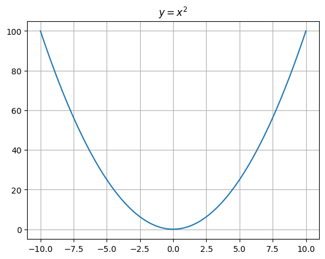
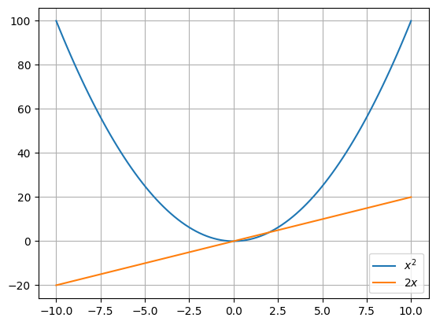

x = "Hello"More Python
Functions, Methods & Modules
Functions
Problem: Write a function sum_of_squares that takes two numbers as arguments and returns sum of their squares.
>>> sum_of_squares(3, 4)
25
>>> sum_of_squares(2, 5)
29Methods
Methods of special kind of functions that work on a value or an object.
x.upper()'HELLO'"Python".upper()'PYTHON'x = 1x.upper() # doesn't work--------------------------------------------------------------------------- AttributeError Traceback (most recent call last) Cell In[5], line 1 ----> 1 x.upper() # doesn't work AttributeError: 'int' object has no attribute 'upper'
Let’s see some more useful methods on strings.
"mathematics".count("mat")2"mathematics".replace("mat", "rat")'ratheratics'Spliting and Joining strings
sentence = "Anything that can go wrong, will go wrong."sentence.split()['Anything', 'that', 'can', 'go', 'wrong,', 'will', 'go', 'wrong.']We can also specify a delimeter to split it differently.
sentence.split(",")['Anything that can go wrong', ' will go wrong.']Can we write a function to compute the number of words in a sentence?
def wordcount(sentence):
return len(sentence.split())wordcount("one two three")3Let’s also see how to join strings.
"-".join(["one", "two", "three"])'one-two-three'"".join(["a", "b", "c"])'abc'Reading Files
%%file three.txt
one
two
threeWriting three.txtlsindex.ipynb three.txtopen("three.txt").read()'one\ntwo\nthree\n'open("three.txt").readlines()['one\n', 'two\n', 'three\n']How to print the contents of three.txt in upper case?
contents = open("three.txt").read()
print(contents.upper())ONE
TWO
THREE
Modules
import timetime.asctime()'Mon Oct 28 11:52:28 2024'print(time.asctime())Mon Oct 28 11:52:40 2024%%file date.py
import time
print(time.asctime())Writing date.py!python date.pyMon Oct 28 11:53:00 2024There are mutliple ways to import things in Python.
import time
time.asctime()'Mon Oct 28 11:57:40 2024'from time import asctime
asctime()'Mon Oct 28 11:58:04 2024'from time import asctime as mytime
mytime()'Mon Oct 28 11:59:05 2024'Let’s look at some more useful modules.
import osList all files in the current directory.
os.listdir()['index.ipynb', 'three.txt', 'date.py']# .. parent directory
os.listdir("..")['2024-08-19',
'2024-10-14',
'2024-10-21',
'02',
'2024-08-12',
'2024-10-28',
'2024-09-30',
'01',
'index.qmd']You can also try giving whole path.
# works only on unix
os.listdir("/home")['anand']You could try the following if you are on windows.
os.listdir("c:\\")Reading Command-line arguments
Let’s see how to write programs that take command-line arguments.
In Python, the sys module keeps tracks of the command-line arguments passed to the program in variable sys.argv
%%file args.py
import sys
print(sys.argv)Writing args.py!python args.py['args.py']!python args.py hello['args.py', 'hello']!python args.py hello world['args.py', 'hello', 'world']Example: Square
Let’s write a script to compute square of a number.
%%file square.py
import sys
n = int(sys.argv[1])
print(n*n)Writing square.py!python square.py 525Lists
names = ["Alice", "Bob", "Charlie"]len(names)3names[0]'Alice'for name in names:
print("Hello", name)Hello Alice
Hello Bob
Hello Charlienumbers = [1, 2, 3, 4, 5]sum(numbers)15Let’s see how to compute product of numbers.
def product(numbers):
result = 1
for n in numbers:
result *= n
return resultproduct([1, 2, 3, 4])24We can add a new element to a list using append method.
numbers = [1, 2, 3, 4, 5]
numbers.append(6)numbers[1, 2, 3, 4, 5, 6]How to computes squares of a list of numbers?
numbers[1, 2, 3, 4, 5, 6]numbers + numbers[1, 2, 3, 4, 5, 6, 1, 2, 3, 4, 5, 6]def squares(numbers):
result = []
for n in numbers:
result.append(n*n)
return resultsquares([1, 2, 3, 4, 5])[1, 4, 9, 16, 25][n*n for n in numbers][1, 4, 9, 16, 25, 36][n*n for n in range(10) if n%2 == 0][0, 4, 16, 36, 64]# sum of squares of all even numbers below one million
sum([n*n for n in range(1000000) if n%2 == 0])166666166667000000How to find all the python files in the current directory?
import os
[f for f in os.listdir() if f.endswith(".py")]['args.py', 'date.py', 'square.py']Example: sumfile
Write a program sumfile.py that takes a filename as command-line argument and computes the sum of all numbers in a file.
%%file 5.txt
1
2
3
4
5Writing 5.txt%%file sumfile.py
import sys
filename = sys.argv[1]
lines = open(filename).readlines()
print(lines)
numbers = [int(line) for line in lines]
print(numbers)
print(sum(numbers))Overwriting sumfile.py!python sumfile.py 5.txt['1\n', '2\n', '3\n', '4\n', '5\n']
[1, 2, 3, 4, 5]
15List Indexing & Slicing
x = ["a", "b", "c", "d", "e", "f", "g", "h"]x[0:2] # from index 0 to index 2 (end is not included)['a', 'b']x[:2] # up to index 2['a', 'b']x[2:] # from index 2 onwards['c', 'd', 'e', 'f', 'g', 'h']x[1:7:3] # from index 1 to 7 in steps of 3['b', 'e']x[::-1] # reverse['h', 'g', 'f', 'e', 'd', 'c', 'b', 'a']How to get the last element of a list?
x['a', 'b', 'c', 'd', 'e', 'f', 'g', 'h']x[len(x)-1]'h'x[-1] 'h'sentence = "one two three"# last word
sentence.split()[-1]'three'Numerical Computing
If you don’t have numpy and matplotlib installed, you can install them using:
!python -m pip install numpy matplotlibimport numpy as npx = np.array([1, 2, 3, 4, 5])xarray([1, 2, 3, 4, 5])x.dtypedtype('int64')x.shape(5,)xarray([1, 2, 3, 4, 5])x + 10array([11, 12, 13, 14, 15])x * xarray([ 1, 4, 9, 16, 25])1/xarray([1. , 0.5 , 0.33333333, 0.25 , 0.2 ])Example: Euclidian distance between two points
Euclidian distance between two vectors is defined as:
\(E(p, q) = \sqrt{\Sigma_{i=1}^{n}(p_{i}-q_{i})^2}\)
P = np.array([1, 2, 3, 4, 5])
Q = np.array([10, 20, 30, 40, 50])d = P-Qnp.sqrt(np.sum(d*d))np.float64(66.74578638386096)def euclidean_distance(P, Q):
d = P-Q
return np.sqrt(np.sum(d*d))euclidean_distance(P, Q)np.float64(66.74578638386096)Plotting Graphs
Install matplotlib using:
!python -m pip install matplotlibimport numpy as np
import matplotlib.pyplot as pltLet’s plot \(y = x^2\).
# divide [-10, 10] into 100 numbers
x = np.linspace(-10, 10, 100)
y = x*xplt.plot(x, y)
plt.grid()
plt.title("$y = x^2$")Text(0.5, 1.0, '$y = x^2$')
plt.plot(x, x*x, label="$x^2$")
plt.plot(x, 2*x, label="$2 x$")
plt.grid()
plt.legend()